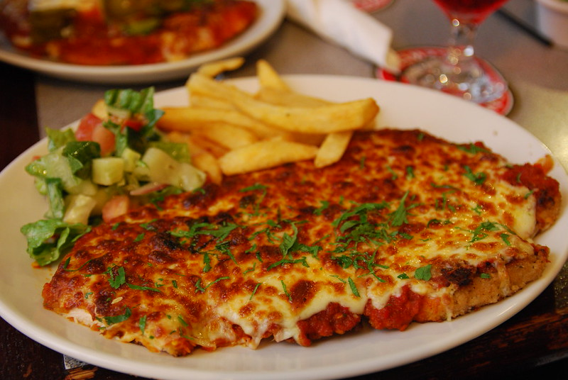

Back to Home
Chicken Parmigiana

Description
The chicken parmigiana (or chicken parm) is a deliciously crisp fried chicken
schnitzel topped with crushed tomatoes, ham, and cheese.
It can be served alongside plenty of sides, but the most common tend to be
fried chips and garden salad. Steamed seasonal vegetables are also a popular option.
Ingredients
Serves 2
- 1 chicken breast, cut in half horizontally
- 2 eggs, whisked together
- Flour
- Enough vegetable oil to coat the bottom of your frypan
- 1 cup breadcrumbs
- Salt and pepper
- 1 teaspoon Garlic powder
- 4 slices of ham
- A tin of crushed tomatoes
- 1 cup freshly grated mozzarella cheese
Instructions
- Place chicken breasts on some cling wrap, placing a second sheet of cling wrap on top.
Beat with a rolling pin or similar until a uniform thickness.
- Take 3 large shallow dishes or plates. In the first, place enough flour to more than coat your chicken.
In the second, pour your whisked eggs. In the third, mix your breadcrumbs with salt, pepper and garlic powder to taste.
- Coat each piece of chicken first in the flour, then in the egg mixture, and finally in the breadcrumbs.
You want to end up with chicken fully covered in breadcrumbs.
- Heat the oil in the frypan over a medium-low heat. Once it's hot, add the chicken and
fry until the first side is golden brown.
- Flip the chicken, coating each piece with 2 slices of ham, crushed tomato and grated mozzarella. Cover the pan to let it steam, melting the cheese and heating the tomato and ham.
- Continue cooking like this until the chicken is fully cooked. (The inner temperature should be 74°C)
- Serve with your choice of sides. I recommend fried chips and garden salad.